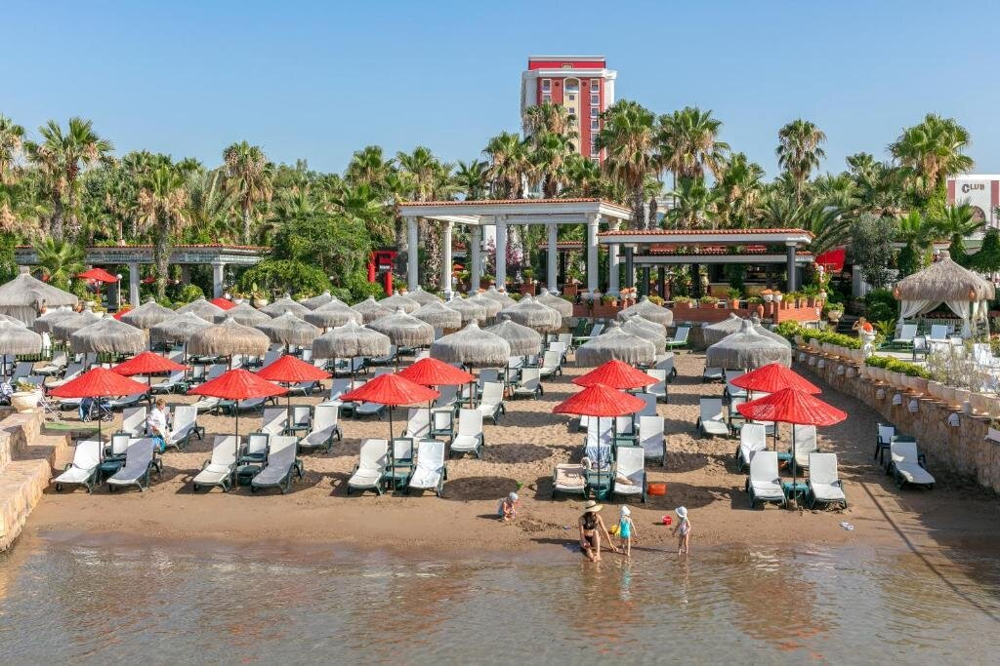

Club Hotel Sera ★★★★★, Анталья
Пятизвездочный отель на первой линии самого популярного курорта Турции – Антальи. Огромная зеленая территории и песчаный заход в море впечатляют туристов с первой секунды, а потом настает очередь изысканно оформленных номеров и потрясающей кухни.
Отдых в Club Hotel Sera выдержан в лучших традициях Турции. Динамичная интересная анимация с красочными вечерними шоу и дискотеками, насыщенная спортивная программа, в том числе теннис, баскетбол, четыре бассейна, тренажерный зал. Для детей работает мини-клуб, где юных путешественников развлекают по 5 часов практически каждый день.
Главный ресторан всегда полон гостей, как, впрочем, и семь баров. А по вечерам свои двери открывают мексиканский, японский и гриль-ресторан.
Более пятисот номеров расположились в четырех корпусах, главным из которых считается 13-этажная высотка. Номера есть на любой вкус – от скромных в 18 кв.м. до делюксов площадью 56 кв.м. А для вип-гостей – Ottoman Palace 450 кв.м. с гостиной, гардеробной, мини-кухней.
"Отель понравился. Стиль – «дорого-богато», все в золоте, орнаментах, вензелях. Я люблю более современные интерьеры, но особо не напрягало. Чувствовала себя султаншей) Номер был большой, удобный. Чистый. Много функциональной мебели с ящиками, все вещи есть куда положить. Питание тоже вполне соответствует, выбор большой. А вот с кофе точно скажу – в лобби-баре самый лучший! Территория в полном порядке, черепахи ползают. Это хорошо. А вот на пляже кошки-собаки – это плохо. Детям очень понравился клуб, особенно всякие занятия – поделки из глины, акварелька, музыка." – Алла М